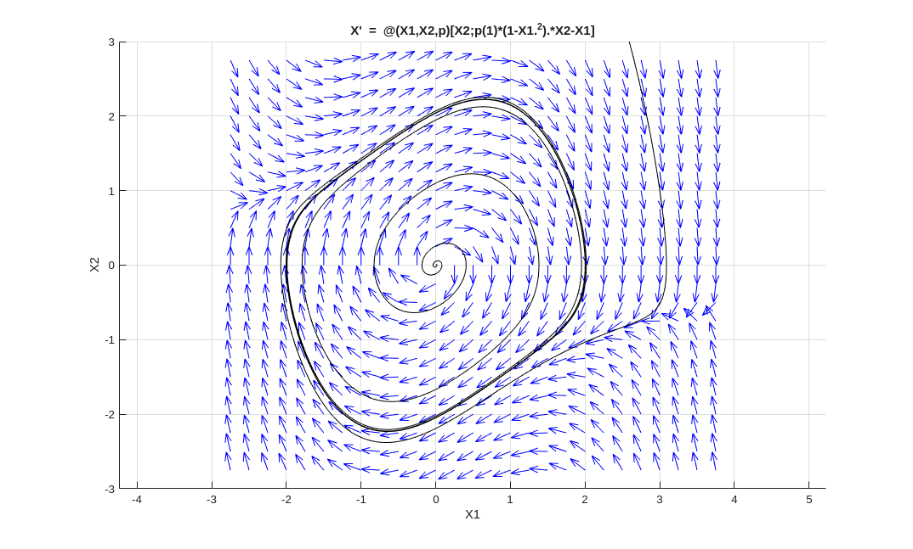
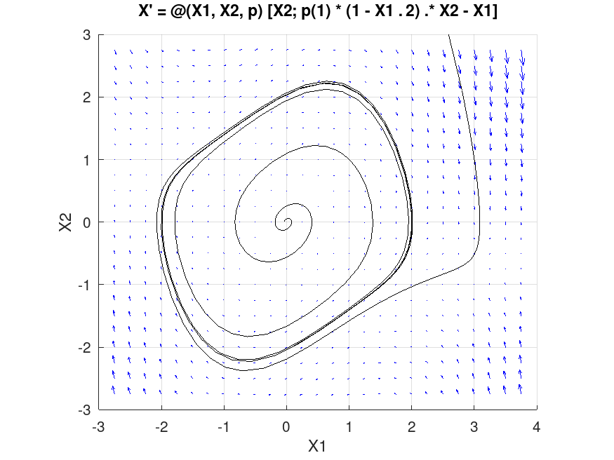
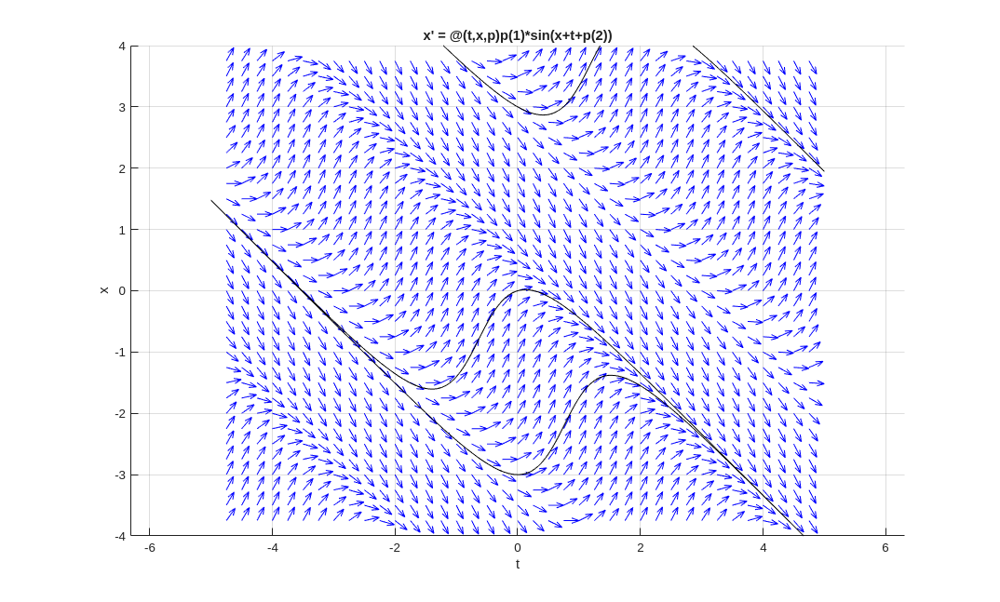

Programmation
Nous avons déjà introduit la programmation dans le document . Définir des fonctions est fondamental pour la programmation dans Matlab. Nous devons admettre que ce document illustre seulement une petite fraction de ce que Matlab peut faire. Nous espérons ajouter plus d'exemples dans le future.
Fonctions itératives
La version standard de Matlab n'a pas de fonctions pour exécuter les méthodes itératives. L'utilisateur doit donc programmer Matlab pour exécuter ces méthodes. L'exemple suivant illustre comment cela peut être fait pour la méthode du point fixe. L'approche est semblable pour d'autres méthodes itératives.
Exemple: Nous considérons l'équation \(\displaystyle p(x) = -x^{5/2}/8 - 5x/4 + 1/2 = 0\). Puisque \(p\) est une fonction continue, \(p(0) = 1/2 > 0\) et \(p(1) = -7/8 < 0\), il découle du théorème des valeurs intermédiaires qu'il existe au moins une solution de cette équation dans l'intervalle \([0,1]\).
Nous avons que \(p(x) = 0 \iff g(x) = -x^{5/2}/8 - x/4 + 1/2 = x \). Ainsi, les solutions de \(p(x) = 0\) sont les points fixes de \(g\) et vice-versa. Puisque \( 1/8 \leq g(x) \leq 1/2 \) et \(|g'(x)| = |-5x^{3/2}/16 - 1/4| \leq 9/16 < 1 \) pour \(0 \leq x \leq 1\), nous obtenons du théorème des points fixes qu'il existe un point fixe unique de \(g\) dans l'intervalle \([0,1]\) et que la suite \(x_0, x_1 = g(x_0), x_2 = g(x_1), \ldots, x_{n+1} = g(x_n), \ldots \) converge vers ce point fixe quelque soit la valeur initiale \(x_0 \in [0,1]\). Donc, nous obtenons la solution de \(p(x) = 0\) dans l'intervalle \([0,1]\) en obtenant le point fixe de \(g\) dans cet intervalle.
Nous débutons les itérations avec \(x_0 = 0.5\) et utilisons \(x_{20}\) comme estimée de la solution. Le code en Matlab suivant, qui se trouve dans le fichier m , fait tout le travail pour nous.
% Starting value of x for the iteration: x = 0.5;
% Number of iterations: n = 20;
% loop: for i = 1:n x = -x.^(5/2)/8 - x/4 + 1/2; end
% Return the final value of the iteration x
Ce n'est pas une fonction mais un simple script que Matlab peut exécuter. Si nous exécutons fxpt1 dans Matlab, alors il calcule \(20\) itérations de la fonction \(g\) à partir de \(x = 0.5\) et affiche la \(\displaystyle 20^{e}\) itération.
>> fxpt1
x =
0.3905
Cependant, le script ci-dessus n'est pas pratique car nous devons modifier le fichier fxpt1.m à chaque fois que l'on change la fonction à itérer, la valeur initiale ou le nombre d'itérations.
Étant donnés le nom (entre apostrophes) ou l'anse funct d'un fonction, une valeur initiale x0 et un nombred'itérations n, la fonction fxpt2 définie dans le fichier m calcule les n premières itérations de la fonction associée à funct en débutant avec la valeur initiale x0.
% x = fxpt2(funct,x0,n)
%
% This function returns the result of n iterations of the function
% funct starting with the value x = x0 .
function x = fxpt2(funct,x0,n)
x = x0;
for i=1:n
x = feval(funct,x);
end
end
Exemple (suite): Pour exécuter \(20\) itérations de la fonction \(g\) à partir de \(x = 0.5\), nous définissons en premier la fonction \(g\) dans Matlab et puis utilisons la fonction fxpt2 avec les arguments g, 0 et 20.
>> g = @(x) -x.^(5/2)/8 - x/4 + 1/2; ... fxpt2(g,0.5,20)
ans =
0.3905
Note: Si nous utilisons la ligne x = funct(x); au lieu de la ligne x = feval(funct,x); dans le script pour la fonction fxpt2, alors la fonction fxpt2 n'accepterait que les anses de fonctions comme premier argument. En utilisant la fonction feval(), les noms de fonctions (entre apostrophes) peuvent aussi être fournis comme premier argument de la fonction fxpt2.
Champs de vecteurs
Nous considérons un système d'EDO autonome de la forme
\[ \vec{x}'(t) = f(\vec{x}(t),p) \] où \(\vec{x} \in \mathbb{R}^2\) et \(p \in \mathbf{R}^m\) est un vecteur de paramètres (possiblement vide) pour la fonction \(f\).Comme nous l'avons promis dans l'exemple portant sur l'équation de van der Pol dans le document , nous fournissons maintenant une fonction pour dessiner les champs de vecteurs qui offre une alternative à la fonction quiver. Nous l'avons appelée vctfld. Cette fonction offre l'option de dessiner le champ de vecteurs tel que le vecteur dessiné à partir d'un point \(\vec{x}\) est proportionnel au vecteur normalisé \(\displaystyle \|f(\vec{x}\|^{-1} f(\vec{x})\). Nous allons illustrer l'utilité de cette option avec l'exemple de l'équation de van der Pol ci-dessous. Il est aussi possible d'utiliser la fonction vctfld pour tracer des orbites par dessus le champ de vecteurs.
Matlab n'a pas de fonctions simples pour dessiner une flèche. Nous avons créé notre propre petite fonction pour dessiner des flèches. Nous l'appelons plotArrow. Le code de cette fonction se trouve dans le fichier m . Ce fichier peut être téléchargé en cliquant avec le bouton droit de la souris sur le lien précédent et en choisissant Save link as ... → Save file. Cette fonction ne dessine pas des flèches très élégantes mais les flèches qu'elle dessine sont parfaitement suffisantes pour dessiner un champ de vecteurs. Le code de cette fonction n'est pas très sophistiqué et n'exige pas d'explications supplémentaires.
Le code de la fonction vctfld affiché ci-dessous se trouve dans le fichier m qui peut être téléchargé en cliquant sur le lien précédent comme nous l'avons déjà expliqué ci-dessus.
Les points suivants doivent être pris en considération lorsque vctfld est utilisée.
- Pour tirer avantage de l'optimisation de Matlab pour les fonctions qui sont array smart, la représentation dans Matlab de la fonction \(f\) doit être dans le format [ f1(X1,X2,p) ; f2(X1,X2,p) ]. L'expression funct peut être le nom de cette fonction (entre apostrophes), l'anse de cette fonction, ou même une expression littéral dans le format ci-dessus (entre apostrophes).
- Le champ de vecteurs est dessiné seulement dans la région du plan délimitée par B(1) < X1 < B(2) et B(3) < X2 < B(4).
- La valeur de flag détermine si le vecteur dessiné à partir du point \(\vec{x}\) est proportionnel à \(f(\vec{x},p)\) ou à \(\displaystyle \|f(\vec{x},p)\|^{-1}f(\vec{x},p)\). Nous avons que flag = 0 (défaut) dans le premier cas et flag = 1 dans le deuxième cas.
- L'argument facultatif init_conds est une matrice de dimensions \( 2 \times k\) où chaque colonne est un vecteur \(\vec{x}_0\). L'orbite \( \{ \vec{x}(t) : -t_f < t < t_f \text{ avec } \vec{x}(0) = \vec{x}_0 \} \) est tracée pour chaque \(\vec{x}_0\) donné par init_conds. Les parties de l'orbite qui sont à l'extérieur de la région définie par B ne sont pas dessinées. De plus, les parties de l'orbite associées à \( t > t_f \) ou \( t < -t_f \) ne sont pas dessinées même si elles pourraient faire parties de la région définie par B. Cela démontre que les résultats d'une visualisation numérique doivent toujours être interprétés avec extrême prudence.
% vctfld(funct,B,p,flag,density,init_conds,tf,options)
%
% Function to draw the vector field of a system of ODE of the form
% dX/dt = f(X1,X2,p)
% with X = (X1,X2) in R^2.
%
% funct is the function that defines the right hand side of the system
% of ODE. This function must be in the format
% f:(X1,X2,p) -> [ f1(X1,X2,p) ; f2(X1,X2,p) ]
% where the functions f1 and f2 are array smart.
% funct can be the name of a function (between apostrophes),
% the handle of a function or an expression of the form
% '[... ; ...]'. In this last case, the variable names
% X1, X2 and p must be used.
% B = [a b c d] are the limits of the region [a,b] x [c,d] of the plan
% where the vector field is drawn. We must have that a < b and c < b.
% p is a vector of parameters for the function f. If f does
% not depend on any parameter, then p must be defined as [].
% flag is 0 if the vector drawn from a point X is proportional to
% f(X1,X2,p) and flag is 1 if the vector drawn from a point X is
% proportional to the normalized version of the vector f(X1,X2,p).
% density is a number. There are density x density equally spaced mesh
% points per unit square. If density is not given, then the
% density is set to 3.
% init_conds is a matrix where each column of init_conds is an initial
% condition for dX/dt = f(X1, X2, p) at time t=0. An orbit is
% drawn for each initial condition. If init_conds is
% not given, then no orbit is drawn.
% tf is a number used to determine the length of the interval of
% integration. The interval of integration is ]-tf , tf[.
% The value should be modify according to the velocity of the
% vector field. If tf is not given, then the default value is tf = 20.
% options is the list of options defined with odeset that will be used
% with the Matlab solver. If options is not given, then
% options is defined as
% options = odeset('RelTol',1e-6,'AbsTol',[1e-5 1e-5]) .
% The Matlab solver used is ODE45 .
%
function vctfld(funct,B,p,flag,density,init_conds,tf,options)
ttlvar = 0;
if ( nargin < 3 )
disp('Not enough arguments, use help vctfld to get the instructions.');
return;
end
if ( nargin < 4 )
flag = 0;
density = 3;
elseif ( nargin < 5 )
density = 3;
end
if ( nargin < 7 )
tf = 20;
end
if ( isa(funct,'function_handle') )
f = funct;
else
if ( exist(funct, 'file') == 2 || exist(funct, 'builtin') == 5 )
f = str2func(funct);
elseif ( ischar(funct) == 1 )
f = str2func(['@(t,X1,X2,p)',funct]);
ttlvar = 1;
else
disp('The vector field cannot be drawn. Either the argument is not ');
disp('the name or handle of an existing function, or it is not the ');
disp('description of a function.');
return;
end
end
% We select the mesh points.
spacing = 1/density;
X1min = B(1) + spacing;
X1max = B(2) - spacing;
if ( X1max < X1min )
disp('The X1 interval is too small for the selected density.')
return;
end
mesh_X1 = X1min:spacing:X1max;
X2min = B(3) + spacing;
X2max = B(4) - spacing;
if ( X2max < X2min )
disp('The X2 interval is too small for the selected density.')
return;
end
mesh_X2 = X2min:spacing:X2max;
size_X1 = length(mesh_X1);
size_X2 = length(mesh_X2);
% We create the figure.
cla;
hold on;
grid on;
if ( ttlvar == 1 )
title(['X'' = ',func2str(f)]);
else
title(['X'' = ',func2str(f),'(t,X)']);
end
xlabel('X1');
ylabel('X2');
axis([B(1) B(2) B(3), B(4)],'equal');
% We compute the vector f(X1,X2,p) at each mesh point.
[XX1,XX2] = meshgrid(mesh_X1,mesh_X2);
M = f(XX1,XX2,p);
M1 = M(1:size_X2,:);
M2 = M(size_X2+1:2*size_X2,:);
% We draw the vector field.
if ( flag == 1 )
% The vector f(X1,X2,p) is normalized. It is also scaled by
% spacing before being drawn at (X1,X2) to avoid overlapping
% vectors.
for (i=1:size_X1)
for (j=1:size_X2)
N = norm([M1(j,i),M2(j,i)]);
if ( N > 0 )
Dir = spacing*[M1(j,i),M2(j,i)]/N;
else
Dir = [0,0];
end
Xs = [XX1(j,i),XX2(j,i)];
Xe = [XX1(j,i),XX2(j,i)] + Dir;
plotArrow(Xs,Xe,'scale',1/2,'theta',20,'Color','blue');
end
end
else
% We compute the norm of the vector at all the mesh points.
% The maximum of these norms is used to scale the vector
% f(X1,X2,p). The resulting vector is also scaled by
% spacing before being drawn at (X1,X2) to avoid overlapping
% vectors.
MaxN = max(max(sqrt(M1.^2 + M2.^2)));
if ( MaxN == 0 )
disp 'The vector field is null!';
return
end
for (i=1:size_X1)
for (j=1:size_X2)
Dir = spacing*[M1(j,i),M2(j,i)]/MaxN;
Xs = [XX1(j,i),XX2(j,i)];
Xe = [XX1(j,i),XX2(j,i)] + Dir;
plotArrow(Xs,Xe,'scale',1/2,'theta',20, 'Color','blue');
end
end
end
% We draw some orbits if requested.
F = @(t,X) f(X(1),X(2),p);
if ( exist('init_conds') == 1 && size(init_conds,1) == 2 )
if ( exist('options') ~= 1 || size(options,1) == 0 )
options = odeset('RelTol',1e-6,'AbsTol',[1e-6 1e-6]);
end
for i = 1:size(init_conds,2)
X0 = [init_conds(1,i);init_conds(2,i)];
t0 = 0;
for n = 0:1
[T,X] = ode45(F,[t0 tf], X0, options);
plot(X(:,1),X(:,2),'k')
tf = - tf;
end
end
end
end
Exemple (suite): Nous avons vu que l'équation de van der Pol peut être réduite au système d'EDO autonome suivant.
\[ \begin{split} x_1'(t) &= x_2(t) \\ x_2'(t) &= \mu (1-x_1(t)^2) x_2(t) - x_1(t) \end{split} \]Pour être en mesure d'utiliser notre nouvelle fonction vctfld pour dessiner le champ de vecteurs, nous exprimons premièrement la fonction du côté droit de ce système d'EDO dans le format requis et nous l'associons à l'anse funct.
>> funct = @(X1,X2,p) [ X2 ; p(1)*(1-X1.^2).*X2 - X1 ];
En ce qui concerne les autres arguments de la fonction vctfld, nous posons B = [-3 4 -3 3] et p = [1/2] comme nous l'avons fait dans l'exemple précédent au sujet de l'équation de van der Pol. Nous posons aussi flag = 1 pour dessiner un vecteur proportionnel à la version normalisé du vecteur funct(X1,X2,p) à chaque point (X1,X2) du maillage, init_conds = [ 1 3 ; 1 1] pour tracer les orbites qui passent par \( (1,1) \) et \( (3,1) \) respectivement, et density = 4 pour obtenir \(4 \times 4\) points également distancés par carré unitaire. Nous assumons les valeurs données par défaut pour les autres arguments.
>> vctfld(funct, [-3 4 -3 3], [1/2], 1, 4, [ 1 3 ; 1 1]);

En plus de la figure, nous obtenons aussi un message de précaution après la commande précédente. Nous obtenons ce message parce que les calculs pour obtenir l'orbite qui passe par \( (3,1) \) génèrent des valeurs au delà des limites de calculs pour \( t < -1.xx \). Nous devons aussi noter que le système d'EDO est raide. Pour des systèmes d'EDO qui sont raides, il est généralement préférable d'utiliser le solveur ODE15s ou ODE23s de Matlab. Cependant, dans le cas présent, le message de précaution apparaît toujours en raison du grand intervalle d'intégration que nous utilisons pour tracer la partie de l'orbite qui passe par \( (3,1) \).
Nous répétons la commande précédente mais cette fois ci avec
flag = 0 au lieu de
flag = 1 pour dessiner un vecteur
proportionnel à funct(X1,X2,p) à chacun
des points (X1,X2) du maillage.
Nous obtenons des vecteurs dont la longueur représente la vélocité du
flot
à leur point de base.
>> vctfld(funct, [-3 4 -3 3], [1/2], 1, 4, [ 1 3 ; 1 1]);

Cette fois ci, nous avons l'information sur la vélocité du
flot
mais nous avons perdu l'information sur la
direction du flot
au voisinage de l'origine.
En somme, les deux représentations du champ de vecteurs sont
nécessaires pour obtenir une image complète du comportement des
orbites.
Remarque: La fonction vctfld pourrait évidemment être améliorée. Par exemple, il serait bien si cette fonction acceptait des arguments pour formater les flèches utilisées pour dessiner le champ de vecteurs et pour formater les orbites. Avec l'augmentation du nombre d'arguments, il serait aussi bénéfique d'utiliser le tableau de cellules varargin pour simplifier et pour adopter la présentation de Matlab pour les arguments de vctfld comme nous l'avons fait pour la fonction plotArrow. Nous laissons ces projets aux lecteurs qui seraient intéressés.
Champs de pentes
Dans une introduction aux EDO, il aurait été normal d'introduire
les champs de pentes
avant les champs de vecteurs
puisque que le premier est au sujet des EDO de la forme
\(x'(t) = f(t,x(t))\) avec \(x \in \mathbb{R}\) qui sont étudiées avant
les systèmes d'EDO. Cependant, ce document ne prétend pas être une
introduction aux EDO. Puisqu'il est facile de modifier le code pour la
fonction vctfld pour obtenir une fonction
qui dessine les champs de pentes
, nous l'avons fait.
Nous rappelons au lecteur qu'un champ de pentes associé à une EDO \(x'(t) = f(t,x(t))\) est produit de la façon suivante. Nous choisissons plusieurs points (également distancés) \( (t,x) \) dans le plan pour former un maillage et dessinons à partir de chacun de ces points \( (t,x) \) un vecteur dans la direction \((1,f(t,x))\). La pente de la droite qui contient ce vecteur est \( f(t,x) \). La tradition est que les vecteurs dessinés ont tous la même longueur qui est plus petite que la plus petite distance entre les valeurs de \(t\) qui sont utilisées pour définir le maillage. Cette dernière condition est pour garantir que les vecteurs ne chevauchent pas.
La fonction pour dessiner les champs de pentes que nous avons créée est appelée slpfld. Le code pour cette fonction se trouve dans le fichier m qui peut être téléchargé en cliquant sur le lien précédent comme nous l'avons déjà expliqué ci-dessus.
>> help slpfld
slpfld(funct,B,p,density,init_conds,options) Function to draw the slope field of an ODE of the form dx/dt = f(t,x,p) with x in R. funct is the function that defines the right hand side of the ODE. This function must be an array smart function. funct can be the name of a function (between apostrophes), the handle of a function or an expression of the form '...'. In this last case, the variable names t, x and p must be used. B = [a b c d] are the limits of the region [a,b] x [c,d] of the t,x plan where the slope field is drawn. We must have that a < b and c < b. p is a vector of parameters for the function f. If f does not depend on any parameter, then p must be defined as []. density is a number. There are density x density equally spaced mesh points per unit square. If density is not given, then the density is set to 3. init_conds is a vector where each component of init_conds is an initial condition for dx/dt = f(t,x,p) at time t=0. The graph of the solution with this initial condition is drawn. If init_conds is not given, then no graph is drawn. options is the list of options defined with odeset that will be used with the Matlab solver. If options is not given, then options is defined as options = odeset('RelTol',1e-6,'AbsTol',1e-5) . The Matlab solver used is ODE45 .
Exemple: Nous dessinons le champ de pente de l'EDO \(x'(t) = p_1\sin(x(t)+t + p_2)\) pour \( -5 < t < 5\) et \( -4 < x < 4\), où \(\vec{p} \in \mathbb{R}^2\) est un paramètre arbitraire. En particulier, nous sommes intéressé au cas \(\vec{p} = (2,3)\).
>> slpfld('p(1)*sin(x+t+p(2))',[-5 5 -4 4],[2,3],4,[-3 0 3]);
